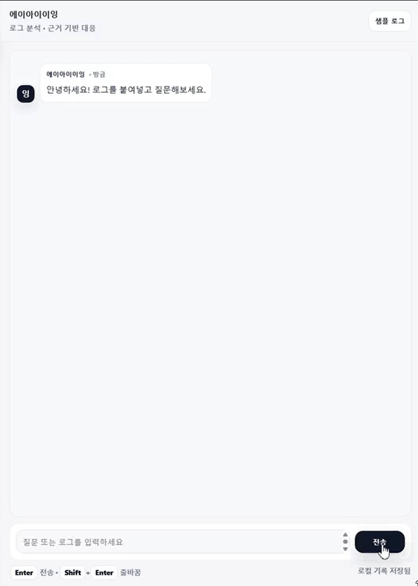

대화형 로그 분석 · 근거 기반 대응
보안 로그를
붙여넣고 물어보세요.
에이아이이잉은 로그에서 위험 신호를 추출하고 공격 가능성을 예측합니다. 그 다음 OWASP·MITRE 근거를 바탕으로 한국어로 대응을 안내합니다.

에이아이이잉은 로그에서 위험 신호를 추출하고 공격 가능성을 예측합니다. 그 다음 OWASP·MITRE 근거를 바탕으로 한국어로 대응을 안내합니다.
